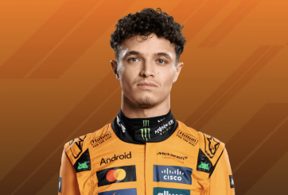
Lando Norris Races for McLaren |

Charles Leclerc Races for Ferrari |
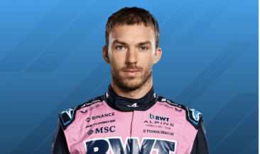
Pierre Gasly Races for Alpine |
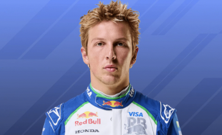
Liam Lawson Races for Racing Bulls |
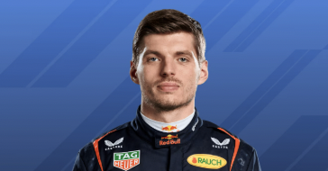
Max Verstappen Races for Red Bull Racing |
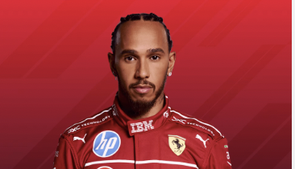
Lewis Hamilton Races for Ferrari |
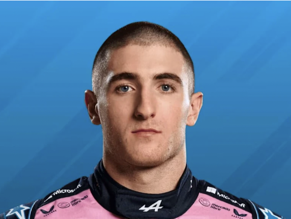
Jack Doohan Races for Alpine |
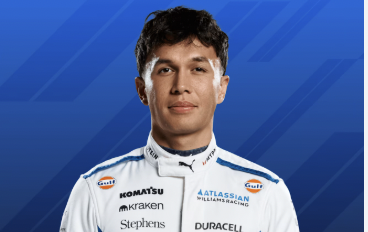
Alexander Albon Races for Williams |
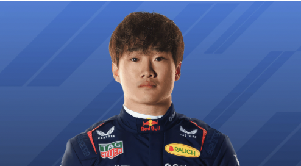
Yuki Tsunoda Races for Red Bull Racing |
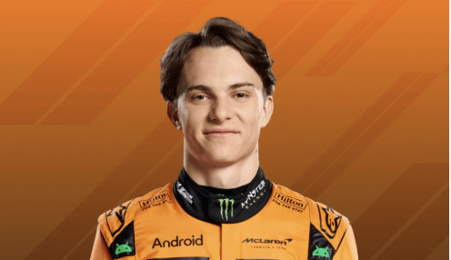
Oscar Piastri Races for McLaren |
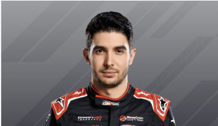
Esteban Ocon Races for Haas |
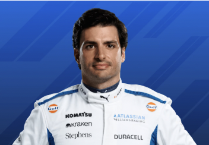
Carlos Sainz Races for Williams |
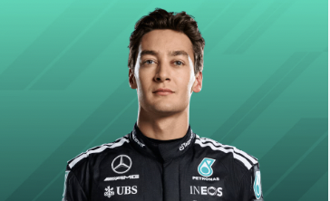
George Russell Races for Mercedes |
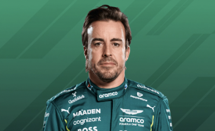
Fernando Alonso Races for Aston Martin |
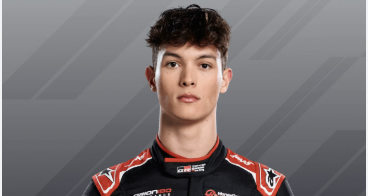
Oliver Bearman Races for Haas |
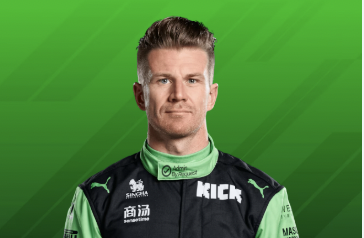
Nico Hülkenberg Races for Kick Sauber |
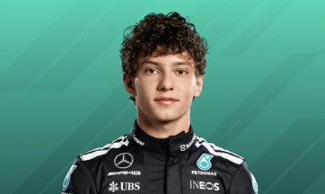
Andrea Kimi Antonelli Races for Mercedes |
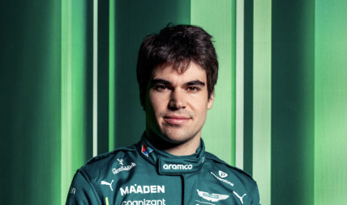
Lance Stroll Races for Aston Martin |
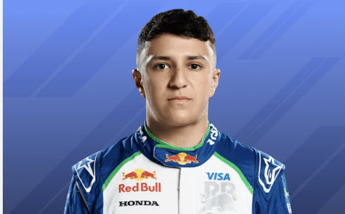
Isack Hadjar Races for Racing Bulls |
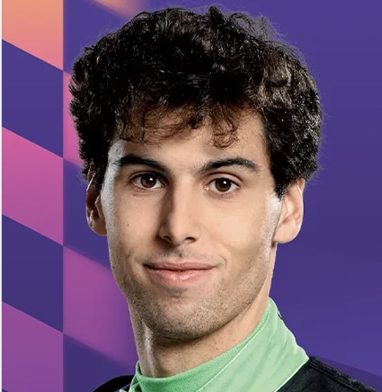
Gabriel Bortoleto Races for Kick Sauber |